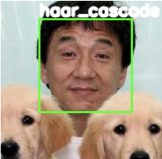

Welcome to Machine Learning Village! Our goal is to encourage you to explore ML topics which are key to Adobe.
We have 7 hands-on labs that will walk you through 4 important topics. Please do not feel the need to read every word, the point instead is to get the feel of the parts of each lab that are most interesting to you. Labs will indicate which sections are safe to skip.
Below is a list of labs with some meta information... ok, enough said, what would you like to learn?
| Lab | Level | Difficulty | You'll learn | Authors |
|---|---|---|---|---|
| Image Recognition  |
1 | Easiest |
|
Smitha Bangalore Naresh Chetan Nanda Ravikiran Gunale |
| Recommender Systems |
1 | Harder |
|
Priyank Mathur Ankit Aggarwal Megha Rawat Pulkit Gera Rahul Mittal Sudheer Sana Tarun Vashisth |
| Text Generation |
1 | Harder |
|
|
| Image Recognition |
2 | Harder |
|
Smitha Bangalore Naresh Chetan Nanda Ravikiran Gunale |
| Recommender Systems |
2 | Harder |
|
Priyank Mathur Ankit Aggarwal Megha Rawat Pulkit Gera Rahul Mittal Sudheer Sana Tarun Vashisth |
| Text Generation |
2 | Harder |
|
Anish Ratnawat Pankaj Gupta Sangeetha Krishnan Apurva Dnyaneshwar Musale |
| Time Series Analysis |
Hardest |
|
Kevin S. Van Horn |